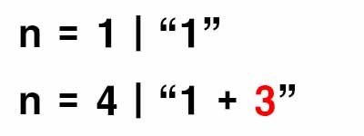
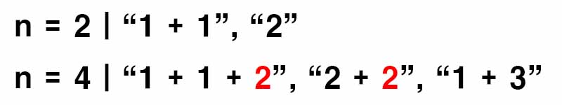
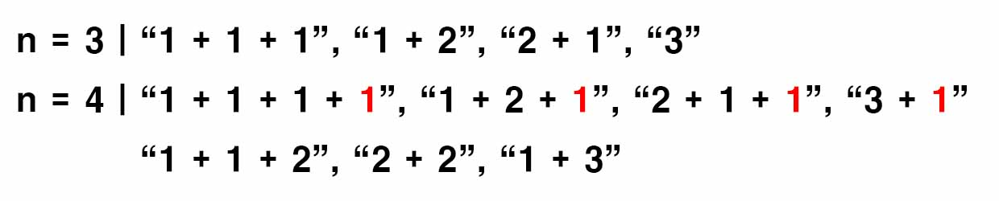

백준 9095. 1, 2, 3 더하기
- https://www.acmicpc.net/problem/9095
-
문제 :
정수 4를 1, 2, 3의 합으로 나타내는 방법은 총 7가지가 있다. 합을 나타낼 때는 수를 1개 이상 사용해야 한다.
● 1+1+1+1
● 1+1+2
● 1+2+1
● 2+1+1
● 2+2
● 1+3
● 3+1
정수 n이 주어졌을 때, n을 1, 2, 3의 합으로 나타내는 방법의 수를 구하는 프로그램을 작성하시오. -
입력 :
첫째 줄에 테스트 케이스의 개수 T가 주어진다. 각 테스트 케이스는 한 줄로 이루어져 있고, 정수 n이 주어진다. n은 양수이며 11보다 작다. -
출력 :
각 테스트 케이스마다, n을 1, 2, 3의 합으로 나타내는 방법의 수를 출력한다. -
풀이 :
n이 1일 때 방법의 수는 "1" 로 1개다.
n이 2일 때 방법의 수는 "1+1", "2" 로 2개다.
n이 3일 때 방법의 수는 "1+1+1", "1+2", "2+1", "3" 으로 4개다.
n이 4부터는 점화식을 이용해서 개수를 구한다.

n이 1일 때 방법의 수에다 3을 더하면 n이 4일 때에 대한 방법의 수가 나온다.

n이 2일 때 방법의 수에다 2을 더하면 n이 4일 때에 대한 방법의 수가 나온다.

n이 3일 때 방법의 수에다 1을 더하면 n이 4일 때에 대한 방법의 수가 나온다.
이렇게 나온 방법의 수를 다 합치면 n이 4일 때에 대한 모든 방법의 수가 나온다.
따라서 점화식은 f(n) = f(n - 1) + f(n - 2) + f(n - 3) 이다.